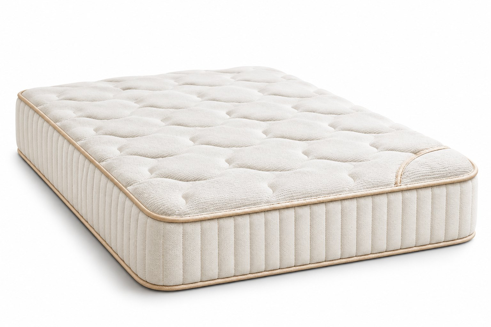
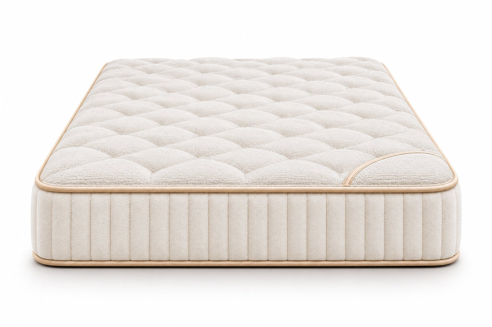
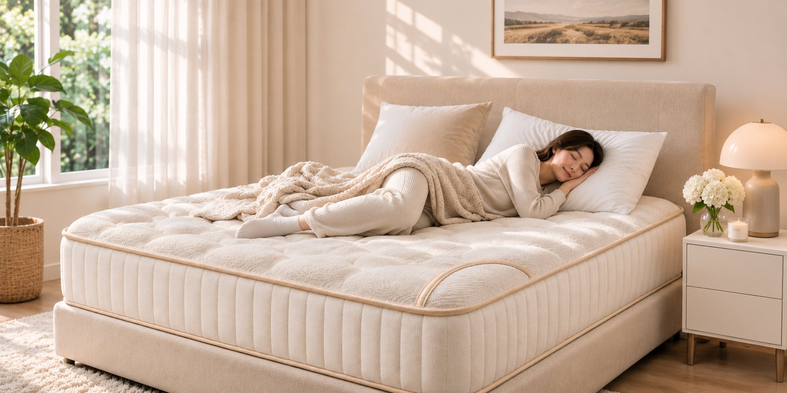
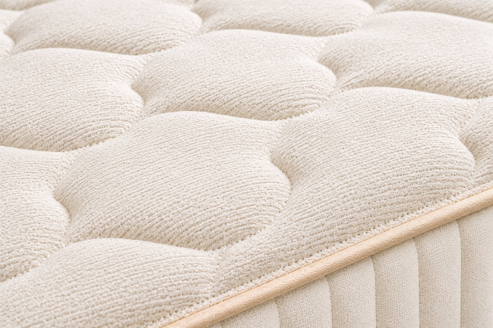
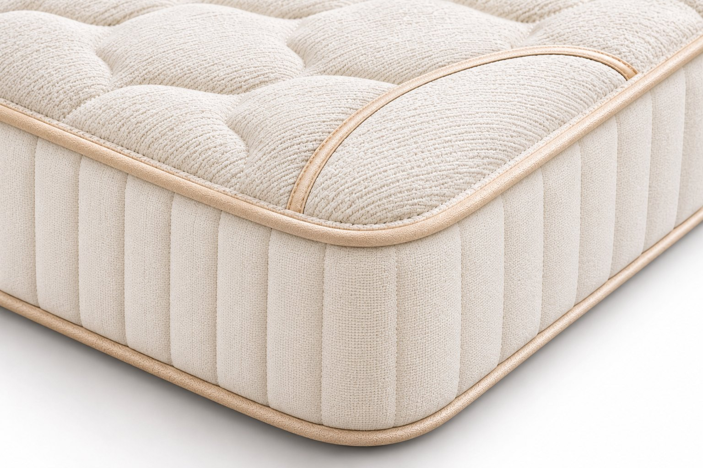
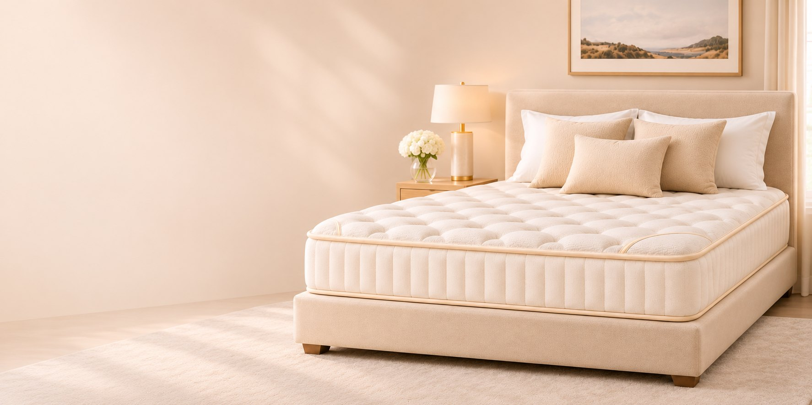
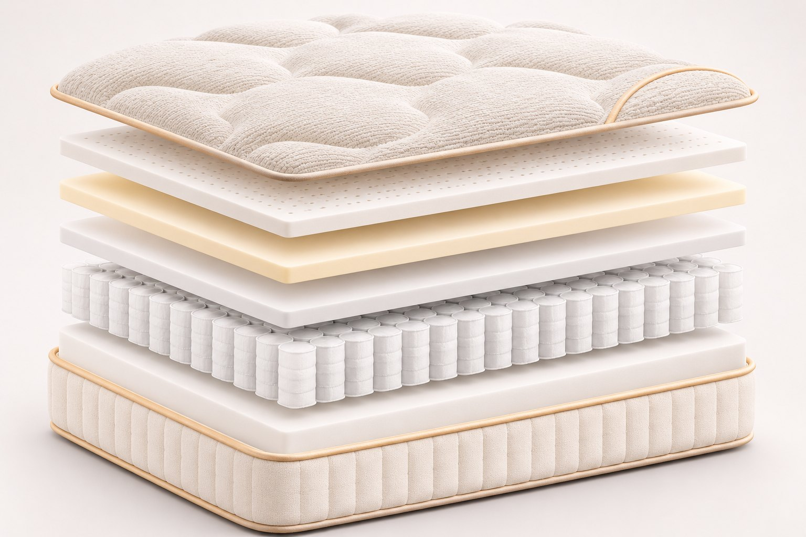
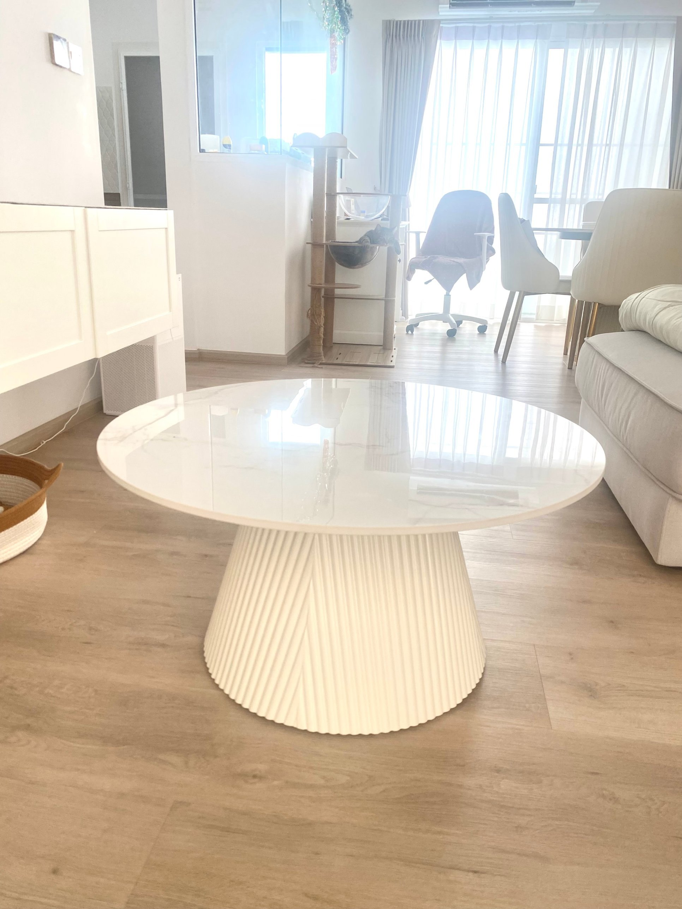
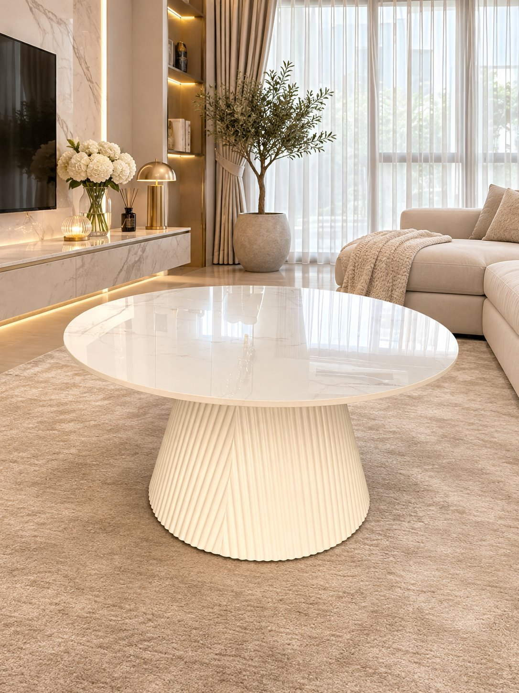
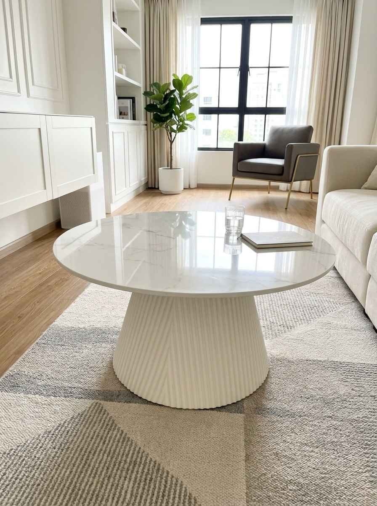

GRAPHIC DESIGN · AI IMAGERY
AI product imagery: a luxury mattress shot with no studio
A campaign-ready image series for a premium bedding brand, from studio and lifestyle shots to ads, made with ChatGPT Images from one master reference instead of a photoshoot.
- Type
- Personal exploration
- My role
- Art direction, prompt engineering
- Tools
- ChatGPT Images, Nano Banana
- Output
- 7 final images

Overview
Brands need clean product photos for ads, websites and launches, but a studio shoot takes time and budget. I explored how far prompts and one master reference can go: one mattress, kept exactly the same in every scene, from a studio shot to a warm bedroom, ad formats and a real product test.
How I work
One master reference and one master brief, reused for every image. The product is locked, and only the camera angle, framing, lighting and environment can change, so good results are easy to reproduce and easy for another designer to pick up.
01 · Reference
Design the product and make one studio image the master reference.
02 · Brief
Lock the product spec, consistency rules and restrictions in one brief.
03 · Generate
Attach the reference to every prompt. Change only the scene.
04 · Review
Fix fabric realism, quilting, proportions and color over several rounds.
05 · Deliver
Crop for each use: product page, marketplace and banner.
Product spec, locked
Soft off-white knitted fabric. Small, rounded, closely spaced quilting. Soft, evenly padded surface. Champagne piping. Vertical channel stitching with even spacing. Fine, realistic stitching.
Consistency rules
Keep exactly the same shape and proportions, quilting size and spacing, fabric color and texture, piping color, thickness and placement, side panel design, and mattress thickness.
Global restrictions
No logos, text or watermarks. No distorted geometry, inconsistent quilting or artificial looking fabric. No extra decoration, and no cropping except on detail shots.
Use the approved studio image as the single source of truth. Do not redesign or modify any product details. Mattress corner detail Close-up three-quarter photograph of one corner. Focus on the edge construction. Clearly show the champagne piping, the rounded quilting and the vertical channel stitching. Preserve the exact original fabric and proportions. Realistic lighting that reveals material depth. Goal: highlight construction quality and finishing details.
Commercial judgment
The exploded view shows the inner layers as a concept only, with no unverified materials or specs labelled, so a product page never promises what the real product does not have.

Rejected Master reference
Master referenceThe image looked good on its own, but the product had changed. The rule is simple: if any detail of the product changes, the image does not ship. It goes back with a sharper prompt that names the exact tuft shape and fabric.
The series
From the studio shot I built a full image set around the same mattress: lifestyle scenes, close details and ready-to-use ad and shop formats, all in one warm American modern luxury style.
02 · Lifestyle photography
A warm American modern luxury bedroom

03 · Product detail
Craft you can almost feel

04 · Advertising & e-commerce
Banner and feature visuals

Real product placement
The same method works with a real product. I took a phone photo of a coffee table in my own home and placed it into a generated luxury living room. The marble top, the fluted cone base and the diagonal seam in the flutes stay exactly as they are in the photo. Only the room, the light and the styling change. I ran the same prompt and photo in ChatGPT Images and Nano Banana, one generation each, to compare the tools.



Place this table in a new, more luxurious room without changing any details of the table.
The photo carries all the product detail, so the prompt only sets the goal and one hard rule: do not touch the product. Both tools kept the table exact. I would use ChatGPT Images for a styled campaign hero, and Nano Banana when the shot needs to stay close to the real photo, like a product page in a customer's home.
What I learned
Reference based generation and continuous prompt refinement are what made the product consistent and the images better. One good master reference matters more than a long prompt.